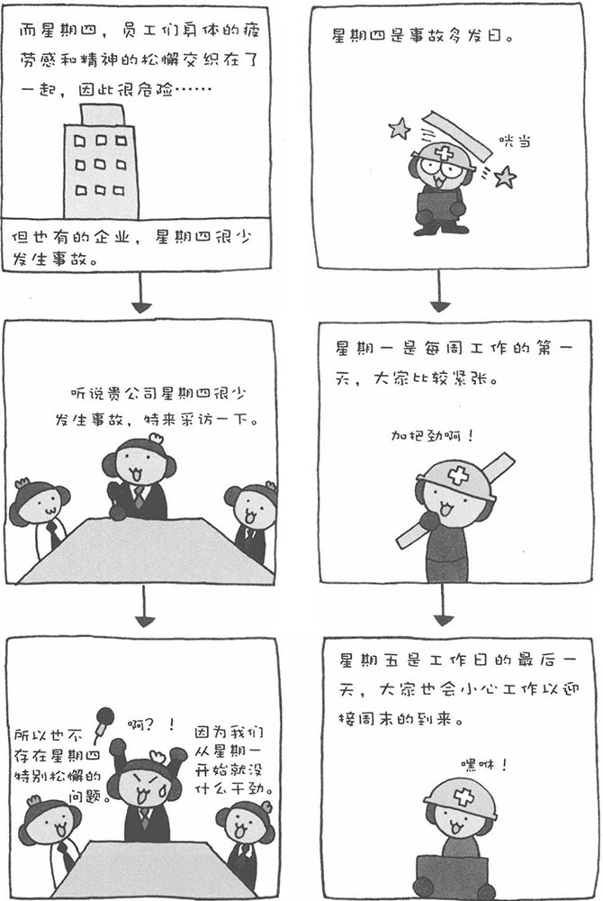

产业心理学，即围绕产业和社会经济生活研究人类心理和行为的学问，它属于社会心理学的范畴。其研究内容包括疲劳与劳动时间、人与机器、事故与安全等，研究主要是为了建立一种高效率的生产环境、使企业内的组织能高效顺畅地运转，从而达到促进产业快速、和谐发展的目的。此外，产业心理学还研究广告对社会产生的影响以及消费者的心理和行为等，在市场营销领域也得到了广泛的应用。
■ 价格尾数的魅力
同样的商品，标价4980日元和5000日元，其销售情况截然不同。虽然只相差20日元，但人们心里会感觉4980属于4000）多，比5000要少很多。
世界各国的商场都会用价格尾数的变化来刺激消费者的心理，只不过在欧美国家，价格尾数多用"9"，比如，199美元。在中国和日本则多用"8"做尾数，这是因为在中国的文化中"8"是吉样数字，而日本自古就受到中国文化影响的缘故。顺便再介绍一下，在打折的时候，卖家也会利用尾数的作用，比如4.1折，看起来好像折扣率很高的样子。
■ 星期四是事故多发日
也许不同的行业有各自的特殊性。以一般的企业为例，星期四这一天的事故发生率远高于其他日子。根据日本某地方劳动局关于建设劳动事故的统计数字，星期四发生事故的次数比其他工作日要高出2.03倍之多。
星期一是每周上班的第一天，员工比较紧张，工作起来小心谨慎。到了星期五，马上就是周末了，虽然大家已经很疲劳，但为了迎接欢乐的周末，还是会小心地工作。星期五的前一天——星期四，员工的身体疲劳感与精神上的松懈交织在一起，于是便形成了"危险的星期四"。
